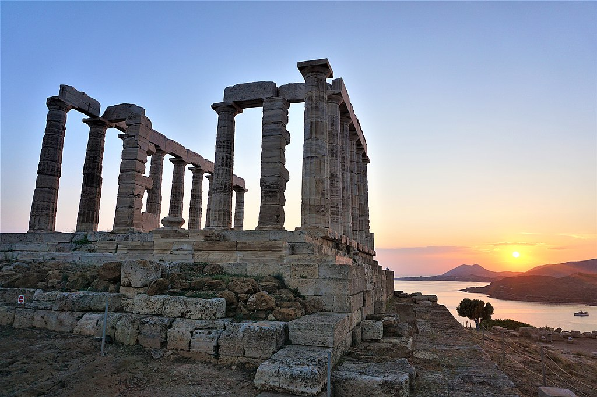

<head>
<meta charset="UTF-8" />
<meta name="keywords" content="drawing, painting" />
<meta name="description" content="drawings by Sunjy" />
<title>Sunjy</title>
<link rel="shortcut icon" type="image/x-icon" href="../../mImages/mCommon/favicon.ico" media="screen" />
<link rel="stylesheet" type="text/css" href="../../mCsses/mCommon/mCssA.css" />
<link rel="stylesheet" type="text/css" href="../../mCsses/mCommon/mCssB.css" />
<link rel="stylesheet" type="text/css" href="../../mCsses/mCommon/mCssC.css" />
<link rel="stylesheet" type="text/css" href="../../mCsses/mCommon/mCssD.css" />
<link rel="stylesheet" type="text/css" href="../../mCsses/mContent/mCssA.css" />
<link rel="stylesheet" type="text/css" href="../../mCsses/mContent/mCssB.css" />
<link rel="stylesheet" type="text/css" href="../../mCsses/mContent/mCssC.css" />
<link rel="stylesheet" type="text/css" href="../../mCsses/mContent/mCssD.css" />
</head>
<script type="text/javascript" src="../../mScripts/mContent/mContentAA.js" /></script>
<script type="text/javascript" src="../../mScripts/mContent/mContentAB.js" /></script>
<script type="text/javascript" src="../../mScripts/mContent/mContentAC.js" /></script>
<script type="text/javascript" src="../../mScripts/mContent/mContentAD.js" /></script>
<script type="text/javascript"></script> 
<script type="text/javascript">
document.write('<div class="mImgAbsolute"></div>');
/*
document.write('<p class="mFontSizeBColor" />From a white paper...</p>');
document.write('<table class="center"><tr><td>');
document.write('');
document.write('</td></tr></table>');
*/
</script>


<script type="text/javascript">
document.write('<p class="mFontSizeBColor" />Temple of Poseidon at Sounion</p>');
document.write('<p class="mFontSizeSColor" />The Ancient Greek temple of Poseidon at Cape Sounion is one of the significant monuments of the Golden Age of Athens. It is perched high above the sea and was built on the ruins of a temple dating from the Archaic period. As with all Greek temples, the Poseidon building was rectangular, with a colonnade on all four sides.<br><br>The design of the temple had 38 Doric columns, of which 16 have survived and are standing today. The temple closely resembles the contemporary and well-preserved Temple of Hephaestus beneath the Acropolis. At the center of the temple would have been the hall of worship, a windowless rectangular room, which would have contained the cult image, a colossal bronze statue of Poseidon.<br></p>');
document.write('<table class="center" /><tr><td>');
document.write('<br>The design of the temple had 38 Doric columns, of which 16 have survived and are standing today. The temple closely resembles the contemporary and well-preserved Temple of Hephaestus beneath the Acropolis. At the center of the temple would have been the hall of worship, a windowless rectangular room, which would have contained the cult image, a colossal bronze statue of Poseidon.<br>" />');
document.write('</td></tr></table>');
</script>


